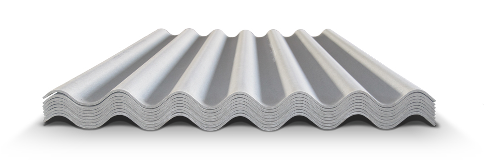

8-ВОЛНОВОЙ ШИФЕР

Восьмиволновой шифер* - стандартный кровельный лист, который используется в строительстве в нашей стране уже более 60 лет. Он имеет симметричные кромки, требующие перекрытие листов на основании СП 17.13330.2011 Кровли. Актуализированная редакция СНиП II-26-76. Высота волны такого профиля оставляет 40 мм и шаг волны 150 мм. Стандартная толщина составляет - 4,7; 5,2; 5,8 мм.
Облегченный восьмиволновой шиферный лист толщиной 4,7; 5,2 мм легче листа толщиной 5,8 мм, что снижает стоимость шифера и упрощает монтаж. При этом листы шифера с уменьшенной толщиной сохраняют все ключевые свойства этого продукта, и по прочности также превосходят другие кровельные материалы.
Восьмиволновые листы изготавливаются на современном оборудовании, что обеспечивает гладкую поверхность и точные геометрические размеры.
ТЕХНИЧЕСКИЕ ХАРАКТЕРИСТИКИ И РАЗМЕРЫ 8 - ВОЛНОВОГО ШИФЕРА
| Высота волны | Шаг волны | Ширина | Длина | Толщина | Масса | Полезная площадь |
|---|---|---|---|---|---|---|
| 40 мм | 150 мм | 1130 мм | 1750 мм | 4,7 мм
5,2 мм 5,8 мм |
21,2 кг
23,4 кг 26,1 кг |
1,57 м2 |
АССОРТИМЕНТ
8-волновой шифер выпускается как обычного серого цвета в неокрашенном варианте, так и в стандартных цветах: индиго (синий), зеленый, шоколад, оранжевый и красный. Окрашенный в заводских условиях, шифер более стоек к негативным воздействиям погоды. Покрытие без потери своих свойств держится до 6-7 лет.
ПРИМЕНЕНИЕ
Лист большей толщины применяется в регионах с высокой снеговой и ветровой нагрузкой. Более тонкий лист стоит применять в зонах умеренного климата.
Листы восьмиволнового шифера преимущественно используют в жилом малоэтажном строительстве для покрытия крыш частных и многоквартирных домов, коттеджей, таунхаусов, нежилых построек (беседки, гаражи и пр).
7-ВОЛНОВОЙ ШИФЕР
Шиферные листы с волнистым профилем на 7 волн имеют симметричные кромки и производятся толщиной 4,7; 5,2; 5,8 мм. Высота волны такого профиля составляет 40 мм, шаг волны 150 мм* .
По ширине семиволновой шифер (980 мм) меньше, чем восьмиволновой и даже, чем шестиволновой (профиля 41/177) и для покрытия крыши нужно большее количество листов. Но в случае, если площадь поверхности крыши хорошо перекроется такого типа листами, целесообразнее применить данный материал. Размер листа шифера влияет на вес материала, соответственно, различается и нагрузка от кровли, выполненной листами разного размера на стропильную систему и несущие стены.
Семиволновые листы изготавливаются на современном оборудовании, что обеспечивает гладкую поверхность и точные геометрические размеры.
ТЕХНИЧЕСКИЕ ХАРАКТЕРИСТИКИ И РАЗМЕРЫ 7 - ВОЛНОВОГО ШИФЕРА
| Высота волны | Шаг волны | Ширина | Длина | Толщина | Масса | Полезная площадь |
|---|---|---|---|---|---|---|
| 40 мм | 150 мм | 980 мм | 1750 мм | 4,7 мм
5,2 мм 5,8 мм |
18,8 кг
20,8 кг 23,2 кг |
1,336 м2 |
| 40 мм | 150 мм | 980 мм | 525 мм
850 мм 1580 мм 1650 мм 1700 мм 1750 мм |
5,2 мм | 20,8 кг ** | 1,336 м2*** |
АССОРТИМЕНТ
Также как и остальные виды волнового шифера, 7-волновой выпускают окрашенным и неокрашенным. Палитра цветного шифера: зеленый, синий, красный, коричневый и оранжевый.
ПРИМЕНЕНИЕ
Семиволновой шифер применяется как в жилом, так и в промышленном строительстве для покрытия крыш.
6-ВОЛНОВОЙ ШИФЕР

Отличительная особенность шестиволнового листа шифера с высотой волны 51 мм и шагом волны 177 мм* - наличие асимметричных кромок. Асимметричные кромки удобны тем, что в процессе монтажа перекрывается только половина волны и повышается эффективность использования площади листа.
Шестиволновой шифер бывает толщиной 5,2 мм или 6,0 мм. Лист толщиной 5,2 мм легче листа толщиной 6,0 мм примерно на 3 кг, что облегчает монтажные работы, а главное, снижает стоимость шифера. При этом листы шифера с уменьшенной толщиной сохраняют показатели прочности.
Шестиволновые листы изготавливаются на современном оборудовании, что обеспечивает гладкую поверхность и точные геометрические размеры.
ТЕХНИЧЕСКИЕ ХАРАКТЕРИСТИКИ И РАЗМЕРЫ 7 - ВОЛНОВОГО ШИФЕРА
| Высота волны | Шаг волны | Ширина | Длина | Толщина | Масса | Полезная площадь |
|---|---|---|---|---|---|---|
| 51 мм | 177 мм | 1097 мм | 625 мм
625 мм 1500 мм 1750 мм |
4,7 мм
5,2 мм 5,8 мм |
18,8 кг
20,8 кг 23,2 кг |
1,336 м2 |
| 40 мм | 150 мм | 980 мм | 525 мм
850 мм 1580 мм 1650 мм 1700 мм 1750 мм |
5,2 мм | 20,8 кг ** | 1,336 м2*** |
АССОРТИМЕНТ
Заводы производят 6-волновой шифер стандартного цветаю
ПРИМЕНЕНИЕ
Листы шестиволнового шифера толщиной 6,0 мм целесообразно использовать в регионах с повышенной снеговой и ветровой нагрузкой. Листы с уменьшенной толщиной (5,2 мм) можно использовать и в жилом строительстве.
© Все права защищены BMPATG 2020.